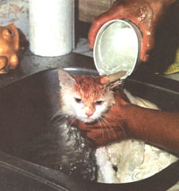
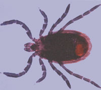
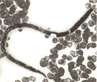

COUNTRY PETS
Helping your pet beat the heat
IT'S SUMMERTIME AND THE LIVING IS easy. Your dog is out all day swimming, catching frisbees, or just napping in the shade. Your cat is chasing mice and butterflies, hiding in the grass, basking in the sun. Time to kick back and let sleeping dogs lie.
Not exactly.
Summer is probably the most demanding season for pets. Aside from the parasitic infestations, animals may experience allergies, a need for dietary changes, and problems related to heat. All of these problems can be averted by an aware and responsible pet owner.
Be certain that your dog has had a yearly heartworm test. Heartworm is a parasite carried by mosquitoes. Its larvae invade the heart and lungs of a dog, causing enlarged hearts, heart failure, and, eventually, death. By testing your dog, you can treat the disease if present, or protect him from acquiring it.
There are a number of heartworm preventatives on the market now. Most of them work retroactively-the pill taken in June protects the dog in May. Some of the heartworm preventatives will also protect the dog against other parasitic worm infestation. Ask your vet which is right for your dog.
Fleas are an ongoing menace all their own. In addition to making your dog scratch, fleas carry tapeworm larvae that can be transmitted to your cat or dog via their bites (many animals are allergic to flea bites as well). Controlling flea infestations takes time and diligence, but it can be done. Brush and comb your animal daily. Vacuum daily. Supplement his food with garlic and brewer's yeast. Bathe your pet in an herbal repellent shampoo like Dr. Bronner's Eucalyptus or a similar mild shampoo containing tea tree oil, peppermint, or citronella on a weekly basis during the height of the flea season.
There is a lot of concern about deer ticks, and rightfully so. Lyme disease, the disease carried by these ticks, infects many pets and their owners each year. Fortunately, there is a preventative vaccine. It is administered in three shots two weeks apart initially, and requires a booster shot once a year after that. While this will protect your animal from contracting Lyme disease, it won't protect you. However, if you follow the "flea regimen," you should be fairly parasite-free.
Your animal may be more or less active during the summer months, depending on what sort of coat he has. The basic rule is feed more if the activity level increases, less if it is decreased from the winter months. If you see itching, hot spots, or mucousy eyes not attributable to some other source, your cat or dog may have airborne allergies to trees (believe it or not!), grass, or mold. Sometimes changing the animal's diet to a hypoallergenic one of a lamb-and-rice kibble or canned food may help. Sometimes a visit to the vet and a prescription for antihistamines is in order.
Finally, your pet gets hot. Leave lots of fresh water all the time. If your dog is kenneled outdoors, there are running water dishes that provide cold, fresh water constantly, something he or she needs. During activities like hiking, running, or biking, bring an extra water bottle for Fido. Brush your dog and cat thoroughly. This will help air to circulate near the skin. Dogs sweat only from the pads of their feet and through panting; help them out by maintaining a clean coat free of undercoat or matting.
Dear Ms. Miller,
I am 18 years old and attending college. I am having a difficult time deciding what I want to do after I finish. I like animals, especially dogs. Are there any occupations, besides vets, that have to do with animals? If so, could you send me some info or give me an address or telephone number I could use to find out about it. Thank you for your time.
-Doug Cortner
Lonedell, MO
Some states allow for an apprenticeship for vet techs, while others require school.
Dear Doug,
I can suggest some career choices for you, but you're going to have to do a little research about what is available in your area for training. I'll try to help out as best I can.
The people who help out veterinarians are called vet techs. They're sort of the equivalent of an animal nurse. It varies from office to office what duties they actually perform, but generally they may be responsible for the initial examination, assisting during surgeries, light clerical, giving animals shots and fluids, keeping the animals healthy and happy during recuperation. Some states allow for an apprenticeship for vet techs, while others require school. You can call your local vet, or look in the back of Dog Fancy or Dog World magazine for advertisements of colleges of fering programs.
Outside of the medical field, you could consider becoming a dog or cat groomer As you'd expect, that's basically being an animal barber. School is about nine months, and then in most states, you have to pass a test to get your license. The advantages of being a groomer are that you can own your own business, work out of your home, and are needed in almost any urban area.
If giving schnauzers a shampoo isn't exactly your idea of a lifelong profession, maybe you want to consider becoming a dog trainer. As more people in cities own dogs, it has become more important for dogs to be well trained. The difficulty in becoming a trainer is getting the right training. I'm pretty skeptical of the schools that churn out obedience trainers. The best thing to do is to find someone in your area that you like and respect and try to study under him or her.
Finally, lots of support services for pet owners are springing up in urban or suburban areas all over the country. They are small businesses that walk dogs, do pet portraits, host pet playgroups. Most ofthese businesses require very little capital to start, only a few posters, and a good pair of shoes.
Dear Ms. Miller,
I've had great success training my 2 1/2 year old mastiff in all ways but one-he likes to eat his fresh feces when I'm not looking. If I'm there he doesn't seem to consider it. We've tried spraying Bitter Apple in his mouth afterwards to no avail. We asked our local obedience trainer if we should spray Bitter Apple on the feces and she answered "I don't think you could make it taste any worse."
Kodie eats a bland dog food and occasionally gets rice but no other table scraps. He doesn't get excited about eating the food the first time; I can't imagine why he wants it the second. Any ideas or suggestions?
-Karen Reidelbach
Virginia Beach, VA
Dear Karen,
First, dogs who indulge in this behavior often do so because of inadequate nutrition. There may be things simply lacking in his diet, or nutrients Kodie is unable to get because of incomplete digestion. If you don't supplement, ask your vet to recommend one, or consider using Pet Tabs, they're a pretty good vitamin.
If you're truly certain that the health of your dog isn't the cause, try adding a little "Accent" brand flavor-enhaneer to Kodie s dinner. It contains MSG-which won't harm your dog-and will make his feceseven less palatable.
Finally, maybe you should use a scoop. l do it several times a day for my dog, and somehow, you get used to it.
Dear Ms.Miller,
I really want to give my cat, Barney, the flea preventative of garlic and brewer's yeast you've suggested, but I'm uncertain about the quantity. Can you give some guidelines?
-Kym Hurley
Carlinville, IL.
Dear Kym,
The basic rule of thumb is to feed them what they will tolerate. Cats are tricky because if they don't like their food, they won't eat it. It is true that fresh garlic and brewer's yeast flakes are best for flea prevention. Try adding a little to your cat's food, starting with just a pinch of each and increasing to about a teaspoon of yeast and a half to a whole clove of garlic daily.
If your cat won't eat the fresh stuff, many pet stores or health food stores have garlic and yeast tablets. While lots of dogs like these as treats, you might have to sneak them crumbled into your cat's food. Sometimes the yeast can cause soft or runny stools. Try reducing the yeast amount if this happens and then build it up again slowly.
If you are generally interested in a natural approach to your cat's health, take a look at Dr. Richard Pitcarin's book, Natural Health for Dogs and Cats. It is comprehensive, well-written and easy too follow, more or less the "bible" of homeopathic pet health.
Dear Ms.Miller,
I am very interested in adopting a springer spaniel. I can't afford one from a breeder and I know I want an older puppy or a dog. I hate to sound so picky, but I just love the breed. Do you have any idea how I can find one?
It may take some time, but eventually you should be able to find the dog of your dreams.
Almost all breeds (Huskies are an exception) have a breed-rescue service. For a small fee, this is placement service run by some extremely dedicated individuals connects people searching for a dog with people who, for some reason, can no longer keep theirs. For the address or phone numbers of people in your area, call your local ASPCA and ask for the breed-rescue service for Springer Spaniels. It may take some time, but eventually you should be able to find the dog of your dreams.
Dear Ms. Miller,
Aclose friend of mine recently suffered the loss of her dog. I've tried to be supportive, but she is still very upset. Ginger, her dog, lived to be quite old and died a natural death. Can you give me some information that I can relay to my friend?
The loss of a dog is akin to the loss of a member of the family. Regrettably, however, our society doesn't see it that way. There are few support systems for the grieving pet owner, but some do exist.
The Grief Recovery Institute is a nonprofit organization that provides a tollfree number for people suffering loss of any kin. They receive many calls from grieving pet owners and can refer callers to outreach programs nationwide. The phone lines are open 9 a.m. to 5 p.m. Pacific Standard Time. Their number is 800/445-4808.
The ASPCA frequently has ongoing support groups for pet owners. Veterinarians sometimes will put owners of recently decease animals in touch with each other. A conversation with someone who is experiencing a similar pain can be very therapeutic. There are also many excellent books concerning the death of a pet. Pet Loss by Herbert A. Nieburg and Arlene Fischer is a good one for adults and older children. The Tenth Good Thing About Barnev is a book simple enough for younger children, but effective for anyone.
Pets are the only companions that offer unconditional love. It's normal to grieve that loss. I wish your friend all the best.
|
 PHOTOGRAPH ? JOEL DEXTER |
 ? R. CALENTINE/ VISUALS UNLIMITED |
 PHOTOGRAPH ? GEORGE J. WILDER/VISUALS UNLIMITED |
|
PHOTOGRAPH ? DENNIS BARNES |
|
|